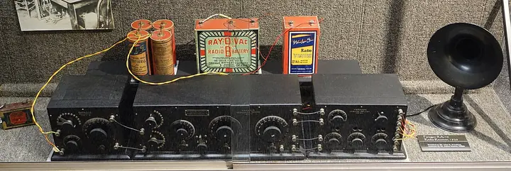
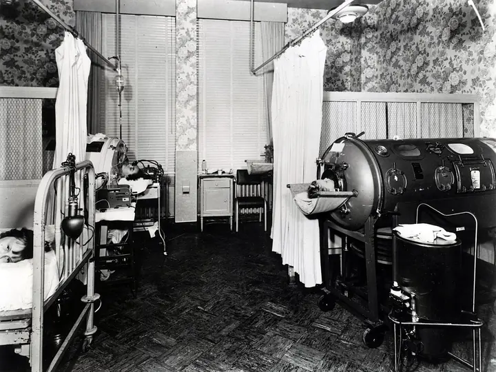
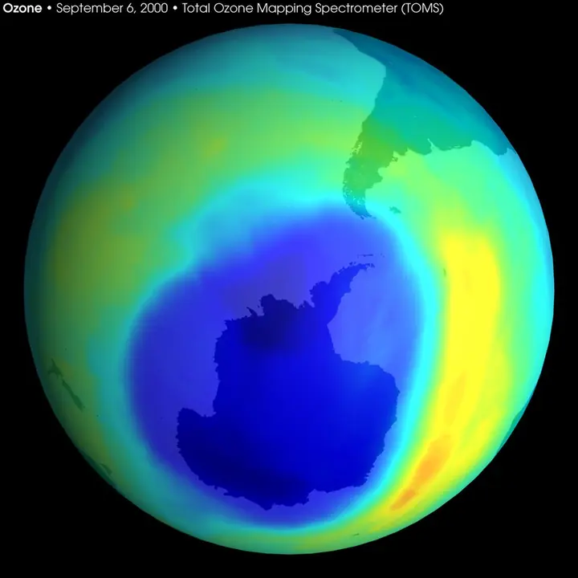
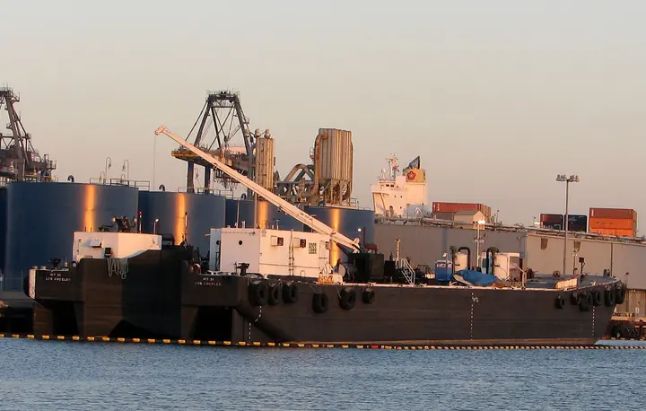

1918 1918년 인플루엔자 대유행1918년 미국 캔자스주 캠프 펀스턴의 임시 병동이미지: Otis Historical Archives, National Museum of Health and Medicine · 퍼블릭 도메인 · 위키미디어 공용

1919 일식이 증명한 상대성이론1919년 5월 29일 개기일식 — 당시 유리 건판을 오늘날 기술로 되살린 사진이미지: ESO/Landessternwarte Heidelberg-Königstuhl/F. W. Dyson, A. S. Eddingt… · CC BY 4.0 · 위키미디어 공용




1939 2차 세계대전히로시마 평화 기념관(원폭 돔) — 1945년 8월 6일 원자폭탄이 터진 자리 가까이에 남은 건물이미지: Jakub Hałun · CC BY 4.0 · 위키미디어 공용


1945 핵무기의 등장1945년 7월 16일 첫 핵실험 '트리니티'의 컬러 사진이미지: Jack W. Aeby, July 16, 1945, Civilian worker at Los Alamos laboratory… · 퍼블릭 도메인 · 위키미디어 공용



1955 소아마비 백신소아마비 환자의 호흡을 돕던 '철의 폐'가 놓인 병실이미지: The U.S. Food and Drug Administration · 퍼블릭 도메인 · 위키미디어 공용


1961 인류 첫 우주 비행보스토크 우주선 복제품 — 독일 슈파이어 기술 박물관이미지: Pascal (Flickr user: pasukaru76) · CC0(권리 포기) · 위키미디어 공용


1963 워싱턴 대행진과 민권운동1963년 8월 28일 워싱턴 대행진 — 연못을 둘러싼 군중과 멀리 워싱턴 기념탑이미지: Warren K. Leffler · 퍼블릭 도메인 · 위키미디어 공용


1969 아폴로 11호 달 착륙1969년 7월 달 표면의 버즈 올드린 — 헬멧에 사진을 찍는 닐 암스트롱이 비칩니다이미지: Neil A. Armstrong · 퍼블릭 도메인 · 위키미디어 공용

1969 아파넷 — 인터넷의 시작아파넷의 첫 접속 장치(IMP) — 오늘날 라우터의 조상이미지: Steve Jurvetson from Menlo Park, USA · CC BY 2.0 · 위키미디어 공용


1978 중국 개혁·개방중국 선전 푸톈 업무 지구(2020년) — 선전은 1980년 첫 경제특구가 됐습니다이미지: Charlie fong · CC BY-SA 4.0 · 위키미디어 공용

1980 천연두 박멸천연두 백신을 놓는 두 갈래 바늘이미지: Photo Credit: James Gathany Content Providers(s): CDC · 퍼블릭 도메인 · 위키미디어 공용





1989 월드와이드웹팀 버너스리가 세계 첫 웹 서버로 쓴 넥스트 컴퓨터 — CERN이미지: User:Coolcaesar at en.wikipedia · CC BY-SA 3.0 · 위키미디어 공용


1994 아파르트헤이트의 끝1994년 4월 27일 첫 민주 선거와 함께 쓰기 시작한 남아프리카공화국 국기이미지: Flag design by Frederick Brownell, image by Wikimedia Commons users · 퍼블릭 도메인 · 위키미디어 공용


2012 크리스퍼 유전자 가위DNA(파랑)를 붙잡은 Cas9 단백질과 안내 RNA(보라)의 구조이미지: Deposition authors: Nishimasu, H., Ishitani, R., Nureki, O.; Visualiz… · CC0(권리 포기) · 위키미디어 공용

2012 딥러닝 혁명엔비디아 지포스 GTX 580 그래픽 칩의 내부 — 알렉스넷은 이 그래픽 카드 두 장으로 학습했습니다이미지: Fritzchens Fritz from Berlin · CC0(권리 포기) · 위키미디어 공용


2019 첫 블랙홀 사진2019년 4월 공개된 M87 은하 중심 블랙홀의 그림자 — 사건지평선망원경이미지: Event Horizon Telescope, uploader cropped and converted TIF to JPG · CC BY 4.0 · 위키미디어 공용


2020 알파폴드 — 단백질 구조 예측알파폴드가 예측한 사람 단백질(ZNF555)의 입체 구조이미지: Unknown authorUnknown author · CC BY 4.0 · 위키미디어 공용

2021 제임스 웹 우주망원경제임스 웹 우주망원경의 첫 심우주 사진 — 은하단 SMACS 0723이미지: NASA, ESA, CSA, and STScI · 퍼블릭 도메인 · 위키미디어 공용


2022 핵융합 점화미국 로런스 리버모어 국립연구소의 국립 점화 시설(NIF)이미지: Lawrence Livermore National Security · CC BY-SA 3.0 · 위키미디어 공용


2026 이란 전쟁과 호르무즈 봉쇄위성에서 본 호르무즈 해협과 무산담 반도(2018년 12월)이미지: MODIS Land Rapid Response Team, NASA GSFC · 퍼블릭 도메인 · 위키미디어 공용


2026 리만 가설 — 인공지능의 증명 발표복소평면에 그린 리만 제타 함수 — 색은 함숫값의 방향을 나타냅니다이미지: Empetrisor · CC BY-SA 4.0 · 위키미디어 공용


2045 핵융합 전기의 첫 불빛프랑스 남부에 짓고 있는 국제핵융합실험로(ITER) — 2018년 4월이미지: Oak Ridge National Laboratory · CC BY 2.0 · 위키미디어 공용


2050 탄소 중립의 갈림길미국 캘리포니아주 남부의 풍력 발전 단지(2016년)이미지: Erik Wilde from Berkeley, CA, USA · CC BY-SA 2.0 · 위키미디어 공용


2062 뇌와 기계의 연결, 느려지는 노화설계가 공개된 뇌–컴퓨터 연결 장치의 기판(OpenBCI)이미지: Omphalosskeptic · CC BY-SA 4.0 · 위키미디어 공용

2076 2076년 — 인구 정점을 앞둔 지구1972년 12월 7일 아폴로 17호가 찍은 지구 '블루 마블'이미지: NASA/Apollo 17 crew; taken by either Harrison Schmitt or Ron Evans · 퍼블릭 도메인 · 위키미디어 공용